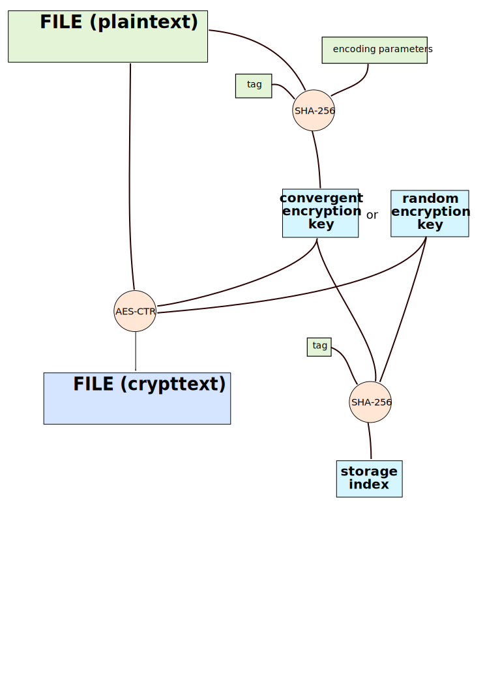
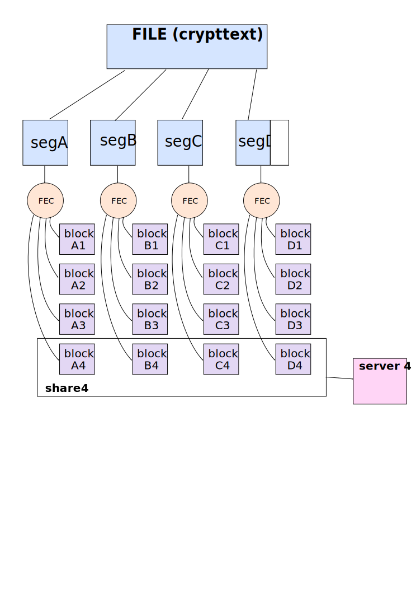
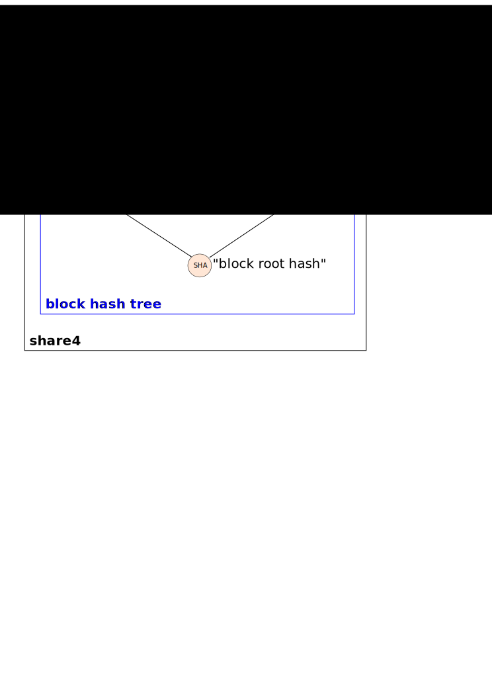
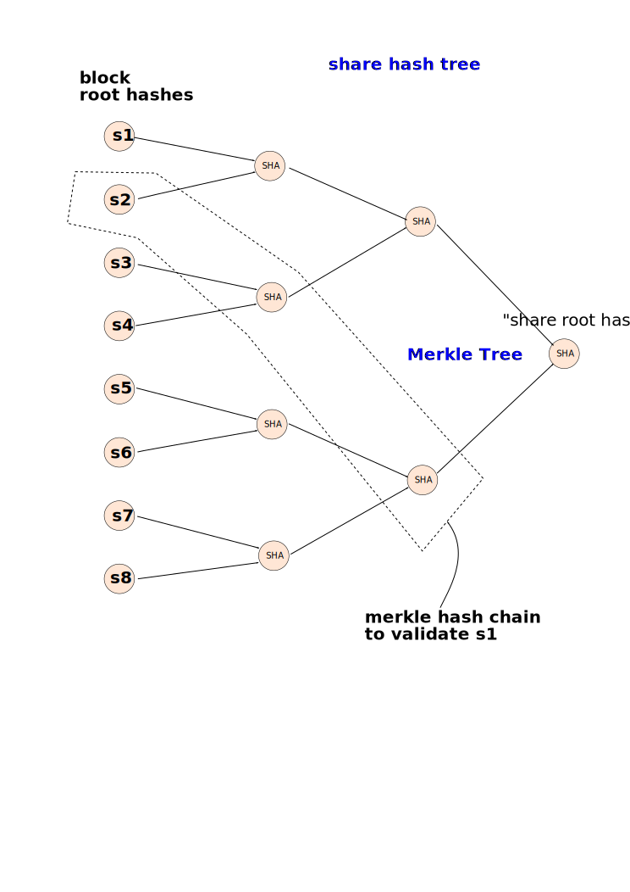
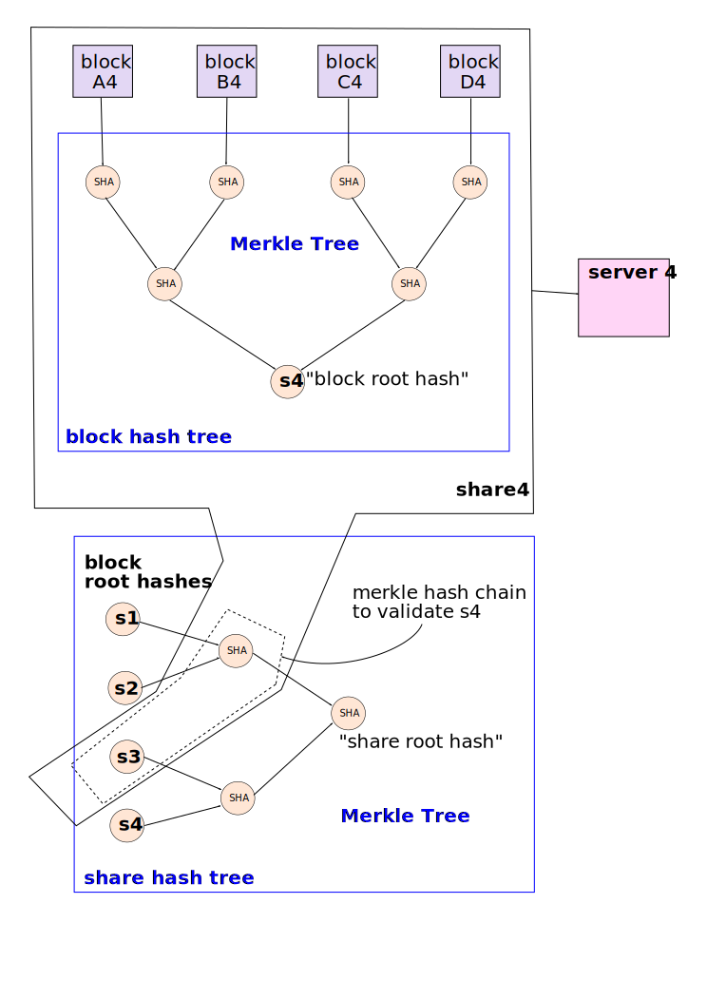

File Encoding¶
When the client wishes to upload an immutable file, the first step is to decide upon an encryption key. There are two methods: convergent or random. The goal of the convergent-key method is to make sure that multiple uploads of the same file will result in only one copy on the grid, whereas the random-key method does not provide this “convergence” feature.
The convergent-key method computes the SHA-256d hash of a single-purpose tag, the encoding parameters, a “convergence secret”, and the contents of the file. It uses a portion of the resulting hash as the AES encryption key. There are security concerns with using convergence this approach (the “partial-information guessing attack”, please see ticket #365 for some references), so Tahoe uses a separate (randomly-generated) “convergence secret” for each node, stored in NODEDIR/private/convergence . The encoding parameters (k, N, and the segment size) are included in the hash to make sure that two different encodings of the same file will get different keys. This method requires an extra IO pass over the file, to compute this key, and encryption cannot be started until the pass is complete. This means that the convergent-key method will require at least two total passes over the file.
The random-key method simply chooses a random encryption key. Convergence is disabled, however this method does not require a separate IO pass, so upload can be done with a single pass. This mode makes it easier to perform streaming upload.
Regardless of which method is used to generate the key, the plaintext file is encrypted (using AES in CTR mode) to produce a ciphertext. This ciphertext is then erasure-coded and uploaded to the servers. Two hashes of the ciphertext are generated as the encryption proceeds: a flat hash of the whole ciphertext, and a Merkle tree. These are used to verify the correctness of the erasure decoding step, and can be used by a “verifier” process to make sure the file is intact without requiring the decryption key.
The encryption key is hashed (with SHA-256d and a single-purpose tag) to produce the “Storage Index”. This Storage Index (or SI) is used to identify the shares produced by the method described below. The grid can be thought of as a large table that maps Storage Index to a ciphertext. Since the ciphertext is stored as erasure-coded shares, it can also be thought of as a table that maps SI to shares.
Anybody who knows a Storage Index can retrieve the associated ciphertext: ciphertexts are not secret.
The ciphertext file is then broken up into segments. The last segment is likely to be shorter than the rest. Each segment is erasure-coded into a number of “blocks”. This takes place one segment at a time. (In fact, encryption and erasure-coding take place at the same time, once per plaintext segment). Larger segment sizes result in less overhead overall, but increase both the memory footprint and the “alacrity” (the number of bytes we have to receive before we can deliver validated plaintext to the user). The current default segment size is 128KiB.
One block from each segment is sent to each shareholder (aka leaseholder, aka landlord, aka storage node, aka peer). The “share” held by each remote shareholder is nominally just a collection of these blocks. The file will be recoverable when a certain number of shares have been retrieved.
The blocks are hashed as they are generated and transmitted. These block hashes are put into a Merkle hash tree. When the last share has been created, the merkle tree is completed and delivered to the peer. Later, when we retrieve these blocks, the peer will send many of the merkle hash tree nodes ahead of time, so we can validate each block independently.
The root of this block hash tree is called the “block root hash” and used in the next step.
There is a higher-level Merkle tree called the “share hash tree”. Its leaves are the block root hashes from each share. The root of this tree is called the “share root hash” and is included in the “URI Extension Block”, aka UEB. The ciphertext hash and Merkle tree are also put here, along with the original file size, and the encoding parameters. The UEB contains all the non-secret values that could be put in the URI, but would have made the URI too big. So instead, the UEB is stored with the share, and the hash of the UEB is put in the URI.
The URI then contains the secret encryption key and the UEB hash. It also contains the basic encoding parameters (k and N) and the file size, to make download more efficient (by knowing the number of required shares ahead of time, sufficient download queries can be generated in parallel).
The URI (also known as the immutable-file read-cap, since possessing it grants the holder the capability to read the file’s plaintext) is then represented as a (relatively) short printable string like so:
URI:CHK:auxet66ynq55naiy2ay7cgrshm:6rudoctmbxsmbg7gwtjlimd6umtwrrsxkjzthuldsmo4nnfoc6fa:3:10:1000000
During download, when a peer begins to transmit a share, it first transmits all of the parts of the share hash tree that are necessary to validate its block root hash. Then it transmits the portions of the block hash tree that are necessary to validate the first block. Then it transmits the first block. It then continues this loop: transmitting any portions of the block hash tree to validate block#N, then sending block#N.
So the “share” that is sent to the remote peer actually consists of three pieces, sent in a specific order as they become available, and retrieved during download in a different order according to when they are needed.
The first piece is the blocks themselves, one per segment. The last block will likely be shorter than the rest, because the last segment is probably shorter than the rest. The second piece is the block hash tree, consisting of a total of two SHA-1 hashes per block. The third piece is a hash chain from the share hash tree, consisting of log2(numshares) hashes.
During upload, all blocks are sent first, followed by the block hash tree, followed by the share hash chain. During download, the share hash chain is delivered first, followed by the block root hash. The client then uses the hash chain to validate the block root hash. Then the peer delivers enough of the block hash tree to validate the first block, followed by the first block itself. The block hash chain is used to validate the block, then it is passed (along with the first block from several other peers) into decoding, to produce the first segment of crypttext, which is then decrypted to produce the first segment of plaintext, which is finally delivered to the user.
Hashes¶
All hashes use SHA-256d, as defined in Practical Cryptography (by Ferguson and Schneier). All hashes use a single-purpose tag, e.g. the hash that converts an encryption key into a storage index is defined as follows:
SI = SHA256d(netstring("allmydata_immutable_key_to_storage_index_v1") + key)
When two separate values need to be combined together in a hash, we wrap each in a netstring.
Using SHA-256d (instead of plain SHA-256) guards against length-extension attacks. Using the tag protects our Merkle trees against attacks in which the hash of a leaf is confused with a hash of two children (allowing an attacker to generate corrupted data that nevertheless appears to be valid), and is simply good “cryptograhic hygiene”. The “Chosen Protocol Attack” by Kelsey, Schneier, and Wagner is relevant. Putting the tag in a netstring guards against attacks that seek to confuse the end of the tag with the beginning of the subsequent value.